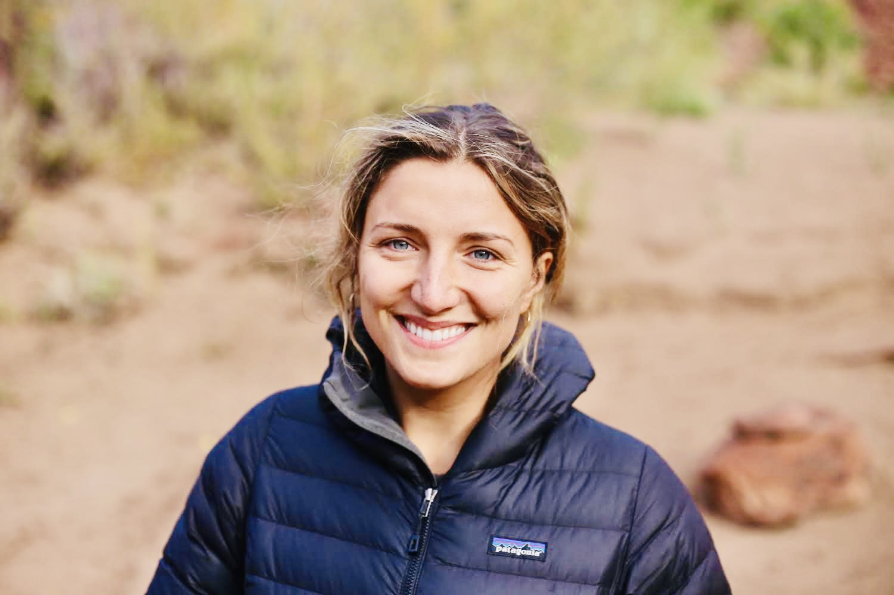

Rae Taylor-Burns
Postdoctoral Scholar, Center for Coastal Climate Resilience,
University of California, Santa Cruz
About
I am an interdisciplinary coastal and natural capital scientist. I study how ecosystems reduce climate risk, and how those benefits can inform policy, finance and management decisions. My work combines hydrodynamic modeling, ecosystem-service and natural capital valuation, nature-based solutions, climate adaptation and environmental finance, and I work closely with decision makers, insurers and practitioners to turn quantitative analyses into actionable information.
I received my PhD in Ocean Sciences from UC Santa Cruz, a Master of Environmental Science and Management from the Bren School at UC Santa Barbara, and a B.S. in Environmental Engineering and Environmental Studies from Yale.
Research
- Flood-risk reduction from coastal wetlands and nature-based solutions
- Bringing ecosystem benefits into insurance, catastrophe models and resilience finance
- Carbon credit quality and blue-carbon markets
- Climate adaptation planning and climate assessments
Selected publications
- Kelso M., Taylor-Burns R., Ingram J.C., Franco G., Reguero B., Beck M.W. (2026). Advancing nature-based insurance to protect people and nature. Communications Earth & Environment 7: 540.
- Taylor-Burns R., Reguero B., Barnard P., Beck M.W. (2025). Hybrid infrastructure extends the lifespan of a regional levee system. Scientific Reports 15, 16218.
- Taylor-Burns R., Lowrie C., Tehranirad B., Lowe J., Erikson L., Barnard P., Reguero B., Beck M.W. (2024). The value of marsh restoration for climate adaptation in an urban estuary. Scientific Reports 14, 6856.
- Taylor-Burns R., Nederhoff K., Lacy J., Barnard P. (2023). The influence of vegetated marshes on wave transformation in a sheltered estuary. Coastal Engineering 184.
- Taylor-Burns R., Reguero B. (2023). Exploring the limitations of marsh restoration for risk reduction. In ASCE Infrastructure Innovation & Adaptation for a Sustainable & Resilient World.
- Taylor-Burns R., Cochran C., Ferron K., Harris M., Thomas C., Fredston A., Kendall B. (2020). Locating gaps in the California Current Ocean Acidification Monitoring Network. Science Progress 103(3): 1–27.
Full list in my CV.